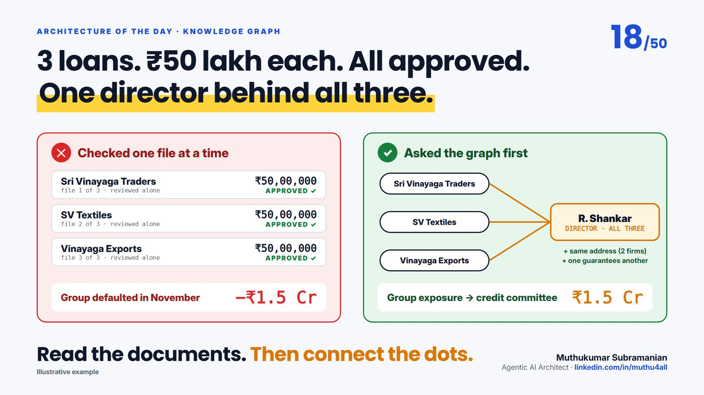

Three Companies. One Owner. ₹50 Lakh Credit Each. Your AI Agent Didn't Connect Them.
By Muthukumar Subramanian · Agentic AI Architect

An NBFC in Coimbatore put an AI agent on its business-loan desk. It reads the bank statements, checks the GST returns, pulls the bureau report and writes the credit note. It's fast and it's thorough.
In March it approved three working-capital loans of ₹50 lakh each. Sri Vinayaga Traders, SV Textiles and Vinayaga Exports. Each file was clean. Each got the same careful review, one at a time.
All three had the same director, R. Shankar. Two shared an office address in Tiruppur. One stood guarantor for another. That's ₹1.5 crore of exposure to one family of companies, and nobody saw it as one. In November the group stopped paying. All three loans went bad in the same week. (The NBFC, the firms, the director and every number are illustrative. Credit teams will recognise the pattern.)
The agent read every document. It never asked who was behind them.
The architecture today
Most enterprise data lives in tables, and most AI agents read documents. Neither is good at relationships.
A loan system stores applications as rows. The documents sit in a file store, maybe embedded for search, as we saw on Day 15. Ask the agent about Sri Vinayaga Traders and it finds everything about Sri Vinayaga Traders. It doesn't think to look for the other two firms, because nothing in the question mentions them.
A knowledge graph stores the connections themselves. Things become nodes: a company, a person, a PAN, a GSTIN, an address, a bank account. Facts become edges: is director of, owns, stands guarantor for, shares an address with. Once the edges exist, "who is connected to this applicant?" is a simple query, not a research project.
👉 [IMAGE: A-day18-2-in-article-architecture.png]
Caption: The loan system and document store stay. An extraction step builds a graph of companies, people, IDs and addresses, and the agent asks the graph before it writes a credit note. Grey is what you already have. Amber is new.
Where AI plugs in now: build the graph, then make the agent ask it
The first job for AI here isn't the decision. It's the extraction, which used to take an analyst a day per file.
→ Pull out the entities. A model reads the application, the GST registration, the board resolution and the bank statements, and lists every company, person, PAN, GSTIN, address and account it finds.
→ Resolve them. "R. Shankar", "Shankar R" and "Ramasamy Shankar" with the same PAN are one person. Plain code does the matching on hard IDs first; the model only suggests matches where IDs are missing, and a person approves those.
→ Write the edges. Director of. Guarantor for. Same address. Same bank account. Each edge keeps its source document.
→ Make the graph a required step. Before the agent writes any credit note, it runs one question: "Show every company and person within two hops of this applicant, and our total exposure to them."
India makes this easier than most places. A GSTIN carries the business's PAN inside it, so firms that share a PAN line up at once. Directors are linked to companies through their DIN in the MCA's records. The data was always there. It just wasn't joined.
When an agent combines graph answers with document text like this, people call it GraphRAG. Microsoft's open-source GraphRAG project is one well-known version; Neo4j, Amazon Neptune and others offer their own.
Where it's heading with agents
In two or three years, I expect the graph to become the agent's sense of context. Not "what does this document say?" but "how does this fit with everything else we know?"
The same graph answers questions across the company. Credit asks about connected borrowers. Procurement asks whether a new vendor shares a director with an existing one. Compliance asks who's related to a politically exposed person. Supply chain asks which of our suppliers depend on the same single factory.
Regulators already think this way. The RBI's large exposures framework for upper-layer NBFCs asks lenders to treat a "group of connected counterparties" as one exposure, linked through control or economic interdependence. An agent that judges each borrower alone is working against the rule, not with it.
👉 [IMAGE: A-day18-3-in-article-hop-checks.png]
Caption: Five connection checks to run before an agent approves credit. Screenshot it for your next credit-policy review. Illustrative.
Watch it work
Three files, reviewed one by one, then drawn as a graph.
👉 [GIF: A-day18-4-in-article-connect-the-dots.gif]
Caption: The nodes appear, the edges draw in, and one director ties three ₹50 lakh loans into a ₹1.5 crore exposure. The agent's answer changes. All details illustrative.
Pros
→ The agent sees the group, not just the borrower, which is how credit risk actually works
→ Every connection keeps its source, so the credit committee can check why two firms are linked
→ One graph serves credit, procurement, compliance and fraud, so you build it once
Cons
→ Entity resolution is hard. Get it wrong and you merge two different "Shankars", or miss the same one spelt two ways
→ Graphs need upkeep. Directors resign, addresses change, guarantees expire, and a stale edge is a wrong answer
→ A new store, a new query language, and a new skill your data team may not have yet
The hard parts
The model is the easy bit. The hard bit is deciding what the entities are and what counts as "connected". Is a shared accountant a connection? A shared phone number? A brother-in-law? Each answer changes who gets credit.
That design work is becoming a role. Some companies call it a Context Engineer: the person who decides what the agent can see and how it's shaped, here the entities, the edges and their sources. And a forward deployed engineer (FDE), an engineer who works inside the customer's team and ships on their real systems, sits with the credit officers for two weeks to learn which connections they actually check by hand today. These titles are still settling. The work isn't.
There's also a fairness question. A graph can find real risk, and it can also tar someone by association. Every "connected" flag should go to a person with the evidence, not quietly lower a score.
The opportunity
Every lender, insurer and large buyer in India has this blind spot, and most have the raw data to fix it: GST registrations, director records, KYC files and their own loan books.
That's the market: graph-backed AI for credit, compliance, supply chain and fraud. A "connected-party check" as a service for NBFCs and co-operative banks. Vendor-relationship graphs for procurement teams. Supplier-dependency maps for manufacturers. Each starts with the same project: extract the entities, resolve them, and put a two-hop check in front of every agent that moves money.
Tools to try
Neo4j or Memgraph as the graph database · Amazon Neptune or TigerGraph at larger scale · Microsoft's open-source GraphRAG to build graphs from documents · any model for entity extraction: Claude, GPT, Gemini or an open model · your existing KYC, GST and loan data as the first source.
Your turn 👇
Should an AI agent be allowed to approve credit without checking connected parties: yes or no? One word.
Tag the credit officer who still connects these dots by hand.
Day 18 of 50 · follow along. Tomorrow: Day 19 · Your AI Agent Paid ₹27 Lakh on Bad Sales Data. Which Team Owns the Mistake?